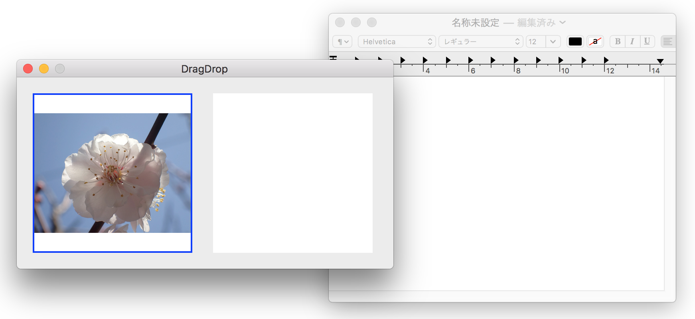

ビューの間でイメージをコピー＆ペーストする

画像をクリックすると動画になります。
本例では、ビューに表示しているイメージオブジェクトをコピーし、同一アプリケーションの異なるビューに貼り付けたり、異なるアプリケーションである「テキストエディット」のビューに貼り付けている。オブジェクトの受け渡しはGenaralペーストボードを介して行われる。
ペーストボードのイメージ
![[pasteboard]](/lib/HTMLofImage.html?filename=/data/B47/pasteboard.png&title=copy_paste1pasteboard&width=700)
Generalペーストボードへの接続
コピー処理
メニュー copyのアクション（AppDelegateに実装する）
ファーストレスポンダーのビューに対して表示中のイメージをペーストボードにコピーする処理を依頼する。
NSViewサブクラスの実装。ビューに表示中のイメージをペーストボードにコピーする。
切り取り（cut）処理は、コピー処理のあとに表示中のイメージを消去するだけである。
貼り付け（paste）処理
基本的な手順は Finderからイメージファイルをコピーし、ビューに表示するの貼り付け処理と同じである。
AppDelegateにメニューのアクションを実装する。メニューアイテムの pasteが選択が選択されたときビューオブジェクトの貼り付け処理を実行する。
ペーストボードからイメージを読み込み、ビューに表示する。NSViewクラスのサブクラスに実装する。
オブジェクト有無の事前チェック
メニューが開いた時に、ペーストボードに貼り付け可能なイメージがあるか、ビューにコピー/切り取りが可能なイメージがあるかチェックし、メニューの アイテムの編集を行う。オブジェクトがあれば アイテムを有効とし、なければ無効としメニューから選択できないようにする。
AppDelegateの中で NSMenuDelegateプロトコルの menuWillOpen(_:)メソッドを実装する。
ソースコード
ドラッグ＆ドロップ、コピー＆ペーストの全ての処理を網羅した共通のアプリケーションとなっている。
AppDelegate アプリケーション制御
UAView NSViewクラスのサブクラス
NSView+imageDisplay イメージの表示サイズを変更するユーティリティ